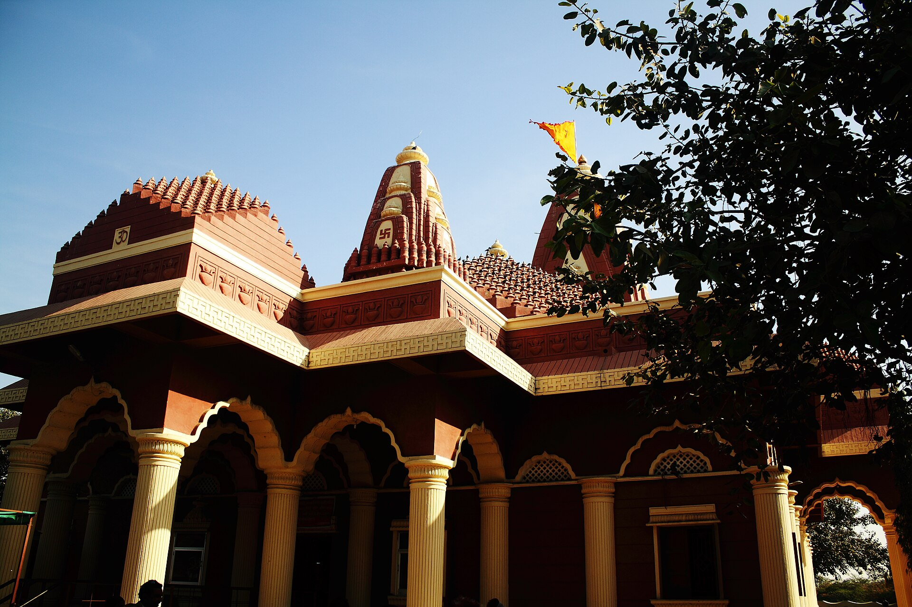

భారతదేశంలో వెలసిన అత్యంత పవిత్ర ద్వాదశ జ్యోతిర్లింగాలలో ఒకటిగా భక్తులచే పూజలందుకుంటున్న పుణ్యధామం శ్రీ నాగేశ్వర జ్యోతిర్లింగం.
ఈ దివ్యక్షేత్రం గుజరాత్ రాష్ట్రంలోని పశ్చిమ తీరాన ఉన్న దేవభూమి ద్వారక జిల్లాలో, పవిత్ర ద్వారక నగరానికి ఉత్తర-తూర్పున సుమారు 17 కిలోమీటర్ల దూరంలో వెలసి ఉంది. పురాణాలలో ఈ ప్రాంతాన్ని 'దారుకావనం'గా కీర్తించారు.
‘నాగేశ్వరుడు’ అనగా సమస్త సర్పాలకు అధిపతి, విష భయాలను, అరిషడ్వర్గాలను హరించి భక్తులను కాపాడే పరమేశ్వరుని రక్షక స్వరూపం. ఈ క్షేత్రంలో స్వామివారిని దర్శించుకుంటే సర్పదోషాలు, కాలసర్పదోషాలు తొలగి సంపూర్ణ రక్షణా కవచం లభిస్తుందని ప్రతీతి.
శ్రీ నాగేశ్వర జ్యోతిర్లింగ క్షేత్రం
ద్వాదశ జ్యోతిర్లింగ దివ్య క్షేత్రం • దారుకావనం, దేవభూమి ద్వారక, గుజరాత్

౧. పరిచయం
౨. క్షేత్ర పురాణ గాథ — సుప్రియుని భక్తి & దారుకాసుర సంహారం
శివ పురాణంలోని కోటిరుద్ర సంహిత (29వ అధ్యాయం) ప్రకారం, పూర్వం ఈ దట్టమైన అరణ్యంలో దారుకుడు అనే రాక్షసుడు, అతని భార్య అయిన దారుకి నివసించేవారు. దారుకి పార్వతీదేవి అనుగ్రహంతో ఆ వనాన్ని ఎక్కడికైనా తరలించగల అపూర్వ వరాన్ని పొందింది. ఆ శక్తితో దారుకాసురుడు మునులను, సాధువులను, ప్రయాణికులను తీవ్రంగా వేధిస్తూ భయభ్రాంతులకు గురిచేసేవాడు.
• శివభక్తుడు సుప్రియుడు: ఒకసారి సముద్ర మార్గాన ప్రయాణిస్తున్న సుప్రియుడు అనే పరమ శివభక్తుడైన వైశ్యుడిని మరియు అతని నౌకలోని అనేకమందిని దారుకాసురుడు బంధించి తన భూగర్భ కారాగారంలో బంధించాడు.
• అఖండ పంచాక్షరీ జపం: బంధనాలలో ఉన్నప్పటికీ సుప్రియుడు అధైర్యపడలేదు. తోటి ఖైదీలందరికీ శివతత్త్వాన్ని ఉపదేశించి, ఒక మట్టి శివలింగాన్ని ప్రతిష్ఠించి అందరితో కలిసి రాత్రింబవళ్ళు భక్తితో 'ఓం నమః శివాయ' పంచాక్షరీ మహామంత్రాన్ని జపింపజేశాడు.
• జ్యోతిర్లింగ ప్రాదుర్భావం: ఇది తెలుసుకున్న దారుకాసురుడు తీవ్ర క్రోధంతో సుప్రియుడిని, శివలింగాన్ని తన గదతో అంతం చేయడానికి దూసుకువచ్చాడు. సుప్రియుడు కనులు మూసి అనన్య భక్తితో ఆర్తిగా పరమేశ్వరుని శరణువేడాడు. ఆ క్షణంలోనే భూమి దద్దరిల్లి, నేల చీల్చుకుంటూ ఆవిర్భవించిన ఒక దివ్య రత్నమండపం మధ్యలో పరమశివుడు తేజోమయమైన జ్యోతిర్లింగ స్వరూపంలో సాక్షాత్కరించాడు!
పరమేశ్వరుడు సుప్రియునికి అజేయమైన పాశుపతాస్త్రాన్ని అనుగ్రహించగా, దానితో దారుకాసురుని రాక్షస సైన్యం అంతమైంది. అప్పుడు పరమశివుడు సుప్రియుని ప్రార్థనను మన్నించి, లోకకల్యాణార్థం పార్వతీదేవి (నాగేశ్వరి) సమేతంగా శాశ్వతంగా ఇక్కడే శ్రీ నాగేశ్వరుడుగా కొలువుదీరాడు.
• శివభక్తుడు సుప్రియుడు: ఒకసారి సముద్ర మార్గాన ప్రయాణిస్తున్న సుప్రియుడు అనే పరమ శివభక్తుడైన వైశ్యుడిని మరియు అతని నౌకలోని అనేకమందిని దారుకాసురుడు బంధించి తన భూగర్భ కారాగారంలో బంధించాడు.
• అఖండ పంచాక్షరీ జపం: బంధనాలలో ఉన్నప్పటికీ సుప్రియుడు అధైర్యపడలేదు. తోటి ఖైదీలందరికీ శివతత్త్వాన్ని ఉపదేశించి, ఒక మట్టి శివలింగాన్ని ప్రతిష్ఠించి అందరితో కలిసి రాత్రింబవళ్ళు భక్తితో 'ఓం నమః శివాయ' పంచాక్షరీ మహామంత్రాన్ని జపింపజేశాడు.
• జ్యోతిర్లింగ ప్రాదుర్భావం: ఇది తెలుసుకున్న దారుకాసురుడు తీవ్ర క్రోధంతో సుప్రియుడిని, శివలింగాన్ని తన గదతో అంతం చేయడానికి దూసుకువచ్చాడు. సుప్రియుడు కనులు మూసి అనన్య భక్తితో ఆర్తిగా పరమేశ్వరుని శరణువేడాడు. ఆ క్షణంలోనే భూమి దద్దరిల్లి, నేల చీల్చుకుంటూ ఆవిర్భవించిన ఒక దివ్య రత్నమండపం మధ్యలో పరమశివుడు తేజోమయమైన జ్యోతిర్లింగ స్వరూపంలో సాక్షాత్కరించాడు!
పరమేశ్వరుడు సుప్రియునికి అజేయమైన పాశుపతాస్త్రాన్ని అనుగ్రహించగా, దానితో దారుకాసురుని రాక్షస సైన్యం అంతమైంది. అప్పుడు పరమశివుడు సుప్రియుని ప్రార్థనను మన్నించి, లోకకల్యాణార్థం పార్వతీదేవి (నాగేశ్వరి) సమేతంగా శాశ్వతంగా ఇక్కడే శ్రీ నాగేశ్వరుడుగా కొలువుదీరాడు.
౩. క్షేత్ర ప్రాముఖ్యత & ఆధ్యాత్మిక విశేషాలు
జగద్గురు ఆదిశంకరాచార్యుల ద్వాదశ జ్యోతిర్లింగ స్తోత్రంలో ఈ క్షేత్రం మహిమను ఇలా కీర్తించారు:
"యామ్యే సదంగే నగరేఽతిరమ్యే విభూషితాంగం వివిధైశ్చ భోగైః |
సద్భక్తిముక్తిప్రదమీశమేకం శ్రీనాగనాథం శరణం ప్రపద్యే ||"
• త్రిముఖి రుద్రాక్షాకార శివలింగం: నాగేశ్వర గర్భగుడిలోని జ్యోతిర్లింగం భూమట్టానికి కాస్త లోతుగా ఉండి, సహజమైన త్రిముఖి రుద్రాక్ష ఆకారపు రూపురేఖలను కలిగి ఉంటుంది. లింగంపై సహజమైన రాతి రేఖలు స్పష్టంగా కనిపిస్తాయి.
• దక్షిణాభిముఖ ఆలయం — నామదేవుని లీల: సాధారణంగా శివాలయాలు తూర్పు ముఖంగా ఉంటాయి. కానీ నాగేశ్వర ఆలయ గర్భగుడి దక్షిణాభిముఖంగా ఉంటుంది (గోముఖం తూర్పు దిశగా ఉంటుంది). దీని వెనుక భక్త నామదేవుని అద్భుత లీల ప్రాచుర్యంలో ఉంది. నామదేవుడు స్వామి ఎదుట కూర్చొని కీర్తనలు పాడుతుండగా, పూజారులు ఆయనను అడ్డుకుని దక్షిణం వైపు కూర్చోవాలని ఆదేశించారు. నామదేవుడు దక్షిణం వైపు వెళ్ళి పాడటం ప్రారంభించగానే, భక్తుని భక్తికి వశమై స్వామివారి గర్భాలయం మరియు శివలింగం దక్షిణ దిశకు తిరిగినట్లు స్థానిక సంప్రదాయం చెబుతుంది.
• ప్రత్యక్ష స్పర్శ దర్శనం & అభిషేకం: సాంప్రదాయక ధోవతి ధరించిన పురుష భక్తులను గర్భాలయంలోకి అనుమతిస్తారు. భక్తులు స్వయంగా తమ చేతులతో జ్యోతిర్లింగానికి జలాభిషేకం, దుగ్ధాభిషేకం చేసుకునే అరుదైన భాగ్యం ఇక్కడ లభిస్తుంది.
"యామ్యే సదంగే నగరేఽతిరమ్యే విభూషితాంగం వివిధైశ్చ భోగైః |
సద్భక్తిముక్తిప్రదమీశమేకం శ్రీనాగనాథం శరణం ప్రపద్యే ||"
• త్రిముఖి రుద్రాక్షాకార శివలింగం: నాగేశ్వర గర్భగుడిలోని జ్యోతిర్లింగం భూమట్టానికి కాస్త లోతుగా ఉండి, సహజమైన త్రిముఖి రుద్రాక్ష ఆకారపు రూపురేఖలను కలిగి ఉంటుంది. లింగంపై సహజమైన రాతి రేఖలు స్పష్టంగా కనిపిస్తాయి.
• దక్షిణాభిముఖ ఆలయం — నామదేవుని లీల: సాధారణంగా శివాలయాలు తూర్పు ముఖంగా ఉంటాయి. కానీ నాగేశ్వర ఆలయ గర్భగుడి దక్షిణాభిముఖంగా ఉంటుంది (గోముఖం తూర్పు దిశగా ఉంటుంది). దీని వెనుక భక్త నామదేవుని అద్భుత లీల ప్రాచుర్యంలో ఉంది. నామదేవుడు స్వామి ఎదుట కూర్చొని కీర్తనలు పాడుతుండగా, పూజారులు ఆయనను అడ్డుకుని దక్షిణం వైపు కూర్చోవాలని ఆదేశించారు. నామదేవుడు దక్షిణం వైపు వెళ్ళి పాడటం ప్రారంభించగానే, భక్తుని భక్తికి వశమై స్వామివారి గర్భాలయం మరియు శివలింగం దక్షిణ దిశకు తిరిగినట్లు స్థానిక సంప్రదాయం చెబుతుంది.
• ప్రత్యక్ష స్పర్శ దర్శనం & అభిషేకం: సాంప్రదాయక ధోవతి ధరించిన పురుష భక్తులను గర్భాలయంలోకి అనుమతిస్తారు. భక్తులు స్వయంగా తమ చేతులతో జ్యోతిర్లింగానికి జలాభిషేకం, దుగ్ధాభిషేకం చేసుకునే అరుదైన భాగ్యం ఇక్కడ లభిస్తుంది.
౪. బ్రహ్మాండ ధ్యాన శివ విగ్రహం & ఆలయ నిర్మాణం
• 82 అడుగుల (25 మీటర్ల) దివ్య శివ విగ్రహం: ఆలయ ప్రాంగణంలో పచ్చని ఉద్యానవనం మధ్య పద్మాసనంలో నిశ్చల ధ్యానముద్రలో కొలువుదీరిన సుమారు 25 మీటర్ల ఎత్తైన మహాదేవుని భారీ విగ్రహం ఈ క్షేత్రానికి ప్రధాన ఆకర్షణ. సుదూర ప్రాంతాల నుండి ప్రయాణించే భక్తులకు సైతం ఈ భారీ విగ్రహం దర్శనమిచ్చి ఆధ్యాత్మిక భావనను కలిగిస్తుంది.
• భూగర్భ గర్భాలయం: రాక్షసుల బంధనాల నుండి సుప్రియుడు విడుదలైన పురాణ గాథకు ప్రతీకగా, ప్రధాన జ్యోతిర్లింగ గర్భాలయం నేలమట్టానికంటే దిగువన ఒక పవిత్ర గుహ వంటి వాతావరణంలో ప్రతిష్ఠించబడి ఉంటుంది.
• ఆధునిక పునరుద్ధరణ: భక్తి సంగీత దిగ్గజం, టి-సిరీస్ వ్యవస్థాపకులు దివంగత గుల్షన్ కుమార్ వారి ట్రస్ట్ సహకారంతో ఆలయ ప్రాంగణం, ఉద్యానవనం, విగ్రహ నిర్మాణాలు అత్యంత సుందరంగా ఆధునీకరించబడ్డాయి.
• భూగర్భ గర్భాలయం: రాక్షసుల బంధనాల నుండి సుప్రియుడు విడుదలైన పురాణ గాథకు ప్రతీకగా, ప్రధాన జ్యోతిర్లింగ గర్భాలయం నేలమట్టానికంటే దిగువన ఒక పవిత్ర గుహ వంటి వాతావరణంలో ప్రతిష్ఠించబడి ఉంటుంది.
• ఆధునిక పునరుద్ధరణ: భక్తి సంగీత దిగ్గజం, టి-సిరీస్ వ్యవస్థాపకులు దివంగత గుల్షన్ కుమార్ వారి ట్రస్ట్ సహకారంతో ఆలయ ప్రాంగణం, ఉద్యానవనం, విగ్రహ నిర్మాణాలు అత్యంత సుందరంగా ఆధునీకరించబడ్డాయి.
౫. ద్వారకా యాత్రా వైభవం & త్రివేణి దర్శనం
సౌరాష్ట్ర ప్రాంతంలో పర్యటించే భక్తులకు నాగేశ్వర దర్శనం అత్యంత ప్రధానమైనది. సనాతన సంప్రదాయంలో ద్వారకా యాత్ర సంపూర్ణం కావాలంటే మూడు ప్రధాన క్షేత్రాలను తప్పక దర్శించాలి:
౧. శ్రీ ద్వారకాధీశ ఆలయం (జగత్ మందిరం): చతుర్ధామాలలో మరియు సప్త మోక్షపురులలో ఒకటైన శ్రీకృష్ణుని రాజధాని.
౨. శ్రీ నాగేశ్వర జ్యోతిర్లింగం: ద్వాదశ జ్యోతిర్లింగ శైవ దివ్యక్షేత్రం.
౩. బేట్ ద్వారక (శంఖోద్ధార ద్వీపం): సముద్ర ద్వీపంలోని శ్రీకృష్ణుని స్వగృహ నివాస ధామం.
ఈ మూడు క్షేత్రాలను దర్శించినప్పుడే హరిహరుల సంపూర్ణ కృపతో యాత్ర పరిసమాప్తమవుతుందని యాత్రికుల అచంచల విశ్వాసం.
౧. శ్రీ ద్వారకాధీశ ఆలయం (జగత్ మందిరం): చతుర్ధామాలలో మరియు సప్త మోక్షపురులలో ఒకటైన శ్రీకృష్ణుని రాజధాని.
౨. శ్రీ నాగేశ్వర జ్యోతిర్లింగం: ద్వాదశ జ్యోతిర్లింగ శైవ దివ్యక్షేత్రం.
౩. బేట్ ద్వారక (శంఖోద్ధార ద్వీపం): సముద్ర ద్వీపంలోని శ్రీకృష్ణుని స్వగృహ నివాస ధామం.
ఈ మూడు క్షేత్రాలను దర్శించినప్పుడే హరిహరుల సంపూర్ణ కృపతో యాత్ర పరిసమాప్తమవుతుందని యాత్రికుల అచంచల విశ్వాసం.
౬. ముఖ్య పూజలు & ఉత్సవాలు
• మహాశివరాత్రి మహోత్సవం: ఈ పర్వదినాన ఆలయం రాత్రంతా భక్తుల కోసం తెరిచి ఉంటుంది. వేలాది భక్తులు నాలుగు కాలాల రుద్రాభిషేకాలు, విశేష హారతులు మరియు బిల్వార్చనలలో పాల్గొంటారు.
• శ్రావణ మాసం: శ్రావణ సోమవారాల్లో గుజరాత్, రాజస్థాన్, మహారాష్ట్రల నుంచే కాక దేశం నలుమూలల నుండి భక్తులు తరలివచ్చి పవిత్ర గంగాజలం, పాలతో స్వామికి అభిషేకాలు సమర్పిస్తారు.
• నిత్య ఆరతులు: వేకువజామున మంగళ ఆరతి, మధ్యాహ్న భోగ ఆరతి, సాయంత్రం శృంగార ఆరతి మరియు రాత్రి శయన ఆరతి వైభవంగా నిర్వహిస్తారు.
• శ్రావణ మాసం: శ్రావణ సోమవారాల్లో గుజరాత్, రాజస్థాన్, మహారాష్ట్రల నుంచే కాక దేశం నలుమూలల నుండి భక్తులు తరలివచ్చి పవిత్ర గంగాజలం, పాలతో స్వామికి అభిషేకాలు సమర్పిస్తారు.
• నిత్య ఆరతులు: వేకువజామున మంగళ ఆరతి, మధ్యాహ్న భోగ ఆరతి, సాయంత్రం శృంగార ఆరతి మరియు రాత్రి శయన ఆరతి వైభవంగా నిర్వహిస్తారు.
౭. పరిసర ముఖ్య దర్శనీయ స్థలాలు
• శ్రీ ద్వారకాధీశ ఆలయం (17 కి.మీ): గోమతీ నదీ సంగమ తీరాన 72 స్తంభాలతో నిర్మించబడిన జగత్ ప్రసిద్ధ శ్రీకృష్ణుని మందిరం.
• గోపీ తలావ్ (సుమారు 5 కి.మీ): వృందావన గోపికలు శ్రీకృష్ణుని దర్శనార్థం విచ్చేసి పరవశించిన పవిత్ర సరోవరం. ఇక్కడి పసుపు రంగు మట్టినే పవిత్ర 'గోపీచందనం'గా భక్తులు నుదుట ధరిస్తారు.
• బేట్ ద్వారక (సుమారు 20 కి.మీ): ఓఖా తీరం నుండి పడవ ద్వారా లేదా నూతన సుదర్శన సేతు ద్వారా చేరుకునే శ్రీకృష్ణుని ద్వీప మందిరం.
• సుదర్శన సేతు (Sudarshan Setu): ప్రధాన భూభాగాన్ని బేట్ ద్వారకతో కలిపే భారతదేశపు అతి పొడవైన కేబుల్ ఆధారిత వంతెన.
• రుక్మిణీ దేవి మందిరం (15 కి.మీ): ద్వారక నగరానికి వెలుపల ఉన్న రుక్మిణీ అమ్మవారి ప్రాచీన శిల్పకళా మందిరం.
• గోపీ తలావ్ (సుమారు 5 కి.మీ): వృందావన గోపికలు శ్రీకృష్ణుని దర్శనార్థం విచ్చేసి పరవశించిన పవిత్ర సరోవరం. ఇక్కడి పసుపు రంగు మట్టినే పవిత్ర 'గోపీచందనం'గా భక్తులు నుదుట ధరిస్తారు.
• బేట్ ద్వారక (సుమారు 20 కి.మీ): ఓఖా తీరం నుండి పడవ ద్వారా లేదా నూతన సుదర్శన సేతు ద్వారా చేరుకునే శ్రీకృష్ణుని ద్వీప మందిరం.
• సుదర్శన సేతు (Sudarshan Setu): ప్రధాన భూభాగాన్ని బేట్ ద్వారకతో కలిపే భారతదేశపు అతి పొడవైన కేబుల్ ఆధారిత వంతెన.
• రుక్మిణీ దేవి మందిరం (15 కి.మీ): ద్వారక నగరానికి వెలుపల ఉన్న రుక్మిణీ అమ్మవారి ప్రాచీన శిల్పకళా మందిరం.
౮. ఆసక్తికర విషయాలు & ఆధ్యాత్మిక రహస్యాలు
• విషభయ నివారణ క్షేత్రం: 'నాగ' అనగా పాములకు అధిపతిగా, విషాల ప్రభావాలను, భయాలను దూరం చేసే దివ్య ఔషధ ప్రదాతగా నాగేశ్వరుడు పూజింపబడతాడు.
• రెండు ప్రసిద్ధ దారుకావన సంప్రదాయాలు: ద్వాదశ జ్యోతిర్లింగాలలో పేర్కొన్న దారుకావనం గుజరాత్లోని ద్వారక సమీప నాగేశ్వరమని అధిక సంఖ్యాకుల విశ్వాసం కాగా, మహారాష్ట్రలోని ఔంధా నాగనాథ్ మరియు ఉత్తరాఖండ్లోని జాగేశ్వర్ క్షేత్రాలను కూడా దారుకావన సంప్రదాయంతో కొందరు అనుసంధానిస్తారు.
• హరిహర క్షేత్ర సంగమం: శ్రీకృష్ణుని లీలాభూమి అయిన ద్వారకలో పరమశివుని జ్యోతిర్లింగం కొలువై ఉండటం భారతీయ సనాతన సంస్కృతిలోని శైవ-వైష్ణవ సమైక్యతకు తిరుగులేని తార్కాణం.
• రెండు ప్రసిద్ధ దారుకావన సంప్రదాయాలు: ద్వాదశ జ్యోతిర్లింగాలలో పేర్కొన్న దారుకావనం గుజరాత్లోని ద్వారక సమీప నాగేశ్వరమని అధిక సంఖ్యాకుల విశ్వాసం కాగా, మహారాష్ట్రలోని ఔంధా నాగనాథ్ మరియు ఉత్తరాఖండ్లోని జాగేశ్వర్ క్షేత్రాలను కూడా దారుకావన సంప్రదాయంతో కొందరు అనుసంధానిస్తారు.
• హరిహర క్షేత్ర సంగమం: శ్రీకృష్ణుని లీలాభూమి అయిన ద్వారకలో పరమశివుని జ్యోతిర్లింగం కొలువై ఉండటం భారతీయ సనాతన సంస్కృతిలోని శైవ-వైష్ణవ సమైక్యతకు తిరుగులేని తార్కాణం.
౯. యాత్రికులకు సమాచారం & రవాణా మార్గాలు
భౌగోళిక స్థానం: దారుకావనం, నాగేశ్వర్, దేవభూమి ద్వారక జిల్లా, గుజరాత్ (పిన్ కోడ్: 361345).
చేరుకునే మార్గాలు:
• రైలు మార్గం: ద్వారక రైల్వే స్టేషన్ (DWK) సమీప ప్రధాన స్టేషన్ (సుమారు 17 కి.మీ). అహ్మదాబాద్, ముంబై, ఢిల్లీ, జైపూర్, వారణాసిల నుండి నేరుగా రైళ్ళు ఉన్నాయి.
• విమాన మార్గం: జామ్నగర్ విమానాశ్రయం (JGA) సుమారు 140 కి.మీ, పోర్బందర్ విమానాశ్రయం (PBD) సుమారు 115 కి.మీ, రాజ్కోట్ అంతర్జాతీయ విమానాశ్రయం సుమారు 230 కి.మీ దూరంలో ఉన్నాయి.
• రోడ్డు మార్గం: ద్వారక పట్టణం నుండి నాగేశ్వర క్షేత్రానికి, గోపీ తలావ్, బేట్ ద్వారకలకు నిరంతరం సిటీ బస్సులు, ఆటో రిక్షాలు, ప్రైవేట్ ట్యాక్సీలు లభిస్తాయి.
చేరుకునే మార్గాలు:
• రైలు మార్గం: ద్వారక రైల్వే స్టేషన్ (DWK) సమీప ప్రధాన స్టేషన్ (సుమారు 17 కి.మీ). అహ్మదాబాద్, ముంబై, ఢిల్లీ, జైపూర్, వారణాసిల నుండి నేరుగా రైళ్ళు ఉన్నాయి.
• విమాన మార్గం: జామ్నగర్ విమానాశ్రయం (JGA) సుమారు 140 కి.మీ, పోర్బందర్ విమానాశ్రయం (PBD) సుమారు 115 కి.మీ, రాజ్కోట్ అంతర్జాతీయ విమానాశ్రయం సుమారు 230 కి.మీ దూరంలో ఉన్నాయి.
• రోడ్డు మార్గం: ద్వారక పట్టణం నుండి నాగేశ్వర క్షేత్రానికి, గోపీ తలావ్, బేట్ ద్వారకలకు నిరంతరం సిటీ బస్సులు, ఆటో రిక్షాలు, ప్రైవేట్ ట్యాక్సీలు లభిస్తాయి.
౧౦. దర్శన వేళలు & అధికారిక సమాచారం
సర్వదర్శన సమయాలు:
• ఉదయం: 6:00 నుండి మధ్యాహ్నం 12:30 వరకు.
• సాయంత్రం: 5:00 నుండి రాత్రి 9:30 వరకు.
(గమనిక: అభిషేకాలు సాధారణంగా ఉదయం వేళల్లో మాత్రమే అనుమతించబడతాయి; ఆలయ నిబంధనల ప్రకారం సాంప్రదాయ వస్త్రధారణ తప్పనిసరి).
అధికారిక వెబ్సైట్లు & సమాచారం:
• గుజరాత్ పర్యాటక అభివృద్ధి సంస్థ (Gujarat Tourism)
• దేవభూమి ద్వారక జిల్లా అధికారిక పోర్టల్
• ఉదయం: 6:00 నుండి మధ్యాహ్నం 12:30 వరకు.
• సాయంత్రం: 5:00 నుండి రాత్రి 9:30 వరకు.
(గమనిక: అభిషేకాలు సాధారణంగా ఉదయం వేళల్లో మాత్రమే అనుమతించబడతాయి; ఆలయ నిబంధనల ప్రకారం సాంప్రదాయ వస్త్రధారణ తప్పనిసరి).
అధికారిక వెబ్సైట్లు & సమాచారం:
• గుజరాత్ పర్యాటక అభివృద్ధి సంస్థ (Gujarat Tourism)
• దేవభూమి ద్వారక జిల్లా అధికారిక పోర్టల్
౧౧. ఆధార గ్రంథాలు
• శివ పురాణం — కోటిరుద్ర సంహిత (దారుకావన నాగేశ్వర ప్రాదుర్భావ అధ్యాయం)
• శ్రీ ఆదిశంకరాచార్య విరచిత ద్వాదశ జ్యోతిర్లింగ స్తోత్రం
• స్కంద పురాణం — సౌరాష్ట్ర & ప్రభాస ఖండం
• భారత ప్రభుత్వ పురావస్తు మరియు గుజరాత్ పర్యాటక రికార్డులు
• శ్రీ ఆదిశంకరాచార్య విరచిత ద్వాదశ జ్యోతిర్లింగ స్తోత్రం
• స్కంద పురాణం — సౌరాష్ట్ర & ప్రభాస ఖండం
• భారత ప్రభుత్వ పురావస్తు మరియు గుజరాత్ పర్యాటక రికార్డులు
౧౨. ముగింపు
దారుకావన పవిత్ర భూమిలో సుప్రియుని ఆర్తిని ఆలకించి ఆవిర్భవించిన శ్రీ నాగేశ్వర జ్యోతిర్లింగం శరణాగత రక్షకుడు, సమస్త భయ నివారకుడు.
ఈ దివ్య లింగాన్ని స్మరించినా, దర్శించినా కాలసర్ప దోషాలు, దుష్టగ్రహ పీడలు తొలగి ఆయురారోగ్యాలు, నిశ్చల శివభక్తి లభిస్తాయని విశ్వాసం.
"ఓం నమస్తే అస్తు భగవన్ విశ్వేశ్వరాయ మహాదేవాయ త్రయంబకాయ త్రిపురాంతకాయ త్రికాలాగ్నికాలాయ కాలాగ్నిరుద్రాయ నీలకంఠాయ మృత్యుంజయాయ సర్వేశ్వరాయ సదాశివాయ శ్రీమన్మహాదేవాయ నమః!"
హర హర మహాదేవ్ • ఓం నమః శివాయ!
ఈ దివ్య లింగాన్ని స్మరించినా, దర్శించినా కాలసర్ప దోషాలు, దుష్టగ్రహ పీడలు తొలగి ఆయురారోగ్యాలు, నిశ్చల శివభక్తి లభిస్తాయని విశ్వాసం.
"ఓం నమస్తే అస్తు భగవన్ విశ్వేశ్వరాయ మహాదేవాయ త్రయంబకాయ త్రిపురాంతకాయ త్రికాలాగ్నికాలాయ కాలాగ్నిరుద్రాయ నీలకంఠాయ మృత్యుంజయాయ సర్వేశ్వరాయ సదాశివాయ శ్రీమన్మహాదేవాయ నమః!"
హర హర మహాదేవ్ • ఓం నమః శివాయ!
✦ సర్వే జనాః సుఖినో భవంతు • ఓం శ్రీ నాగేశ్వరాయ నమః ✦